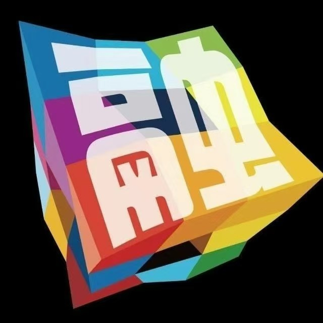

风筝的历史可追溯至中国春秋战国时期（约公元前5世纪），相传由墨子或鲁班以木头或竹子制成"木鸢"，后因造纸术普及演变为"纸鸢"。早期主要用于军事，如汉代韩信测距、南北朝传递求救信号，唐代后逐渐成为民间娱乐活动。约13世纪，风筝经丝绸之路传入阿拉伯及欧洲，进而影响全球。
在中国，放风筝不仅是一种传统游戏，更承载着人们对健康、好运、和平的祝愿。清明节放风筝是常见习俗，人们相信放飞风筝能带走病痛和厄运。风筝图案也富有寓意，如蝴蝶象征爱情、龙象征权威，燕子代表好运和春天的到来。